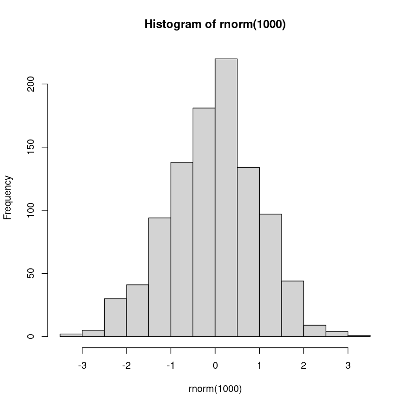

Introduction to R#

What is R? R is a programming language for statistical computing and graphics, developed and maintained by the R Core Team and the R Foundation for Statistical Computing. Initially created at the University of Auckland in 1991, it became an open-source project in 1995. Similar to Python, R is open-source, which allows users to contribute packages that simplify complex tasks—all available for free.
What are the pros and cons of R?
There are a few advantages R has over Python in the realm of statistics and data analysis:
Built for statistics
Data visualization
Additional statistical packages
Data wrangling
Academic focus
Customizable
Disadvantages of R vs. Python:
Less readable
More difficult to learn well
Not as beginner-friendly
For a first impression of what R can do, let’s generate 1000 random numbers following a standard normal distribution (rnorm = random normal) and plot them. R includes a built-in function called plot specifically for creating plots like this:
plot(rnorm(1000))
The standard normal distribution is a special case of a Gaussian distribution with mean (average location) of 1 and a standard deviation (average dispersion) of 0. The gaussian distribution has a characteristic bell shape, as shown in the histogram below using the R’s hist function.
hist(rnorm(1000))

R Syntax overview#
Syntax loosely follows traditional
C-styleBraces
{and}are used to form blocks (forifconditins,forloops, functions, etc).Semi-colons are used optionally to end statements, required if on same line.
Assignments are made with
<-or->(or=)Dots
.have no special meaning – they are not operators.Single and double quotes have the same meaning, but double quotes tend to be preferred.
Use single quotes if you expect your string to contain double quotes.
Indexing starts from 1!
Variables#
Like in other languages, variables can be named almost arbitrarily. Here are the naming rules:
A variable name must start with a letter and can be a combination of letters, digits, period(.) and underscore(_).
If it starts with period(.), it cannot be followed by a digit.
A variable name cannot start with a number or underscore (_)
Variable names are case-sensitive (age, Age and AGE are three different variables)
Reserved words cannot be used as variables (TRUE, FALSE, NULL, if…)
To assign a value to a variable, use the <- operator. For example:
x<-2
<- symbol should be understood as a single unit: an arrow pointing to the variable receiving the assigned value. This is known as the assignment operator.
Hello world program#
As is common in any first lesson on programming, one of the first things to do is write a “Hello, World!” program.
In R, you can print variables and values using theprint function.
print("Hello, DS-1002 class!")
[1] "Hello, DS-1002 class!"
Data types#
R has the following basic data types:
character: e.g. “a”, “hola”, etc.
numeric (real or decimal): 3, 3.1415, -10, etc.
integer: 3L (The L specifies this variable to be an integer)
logical: TRUE or FALSE
complex: 1+2i
In case of doubt about the data type, R provides built-in functions to inspect this, for example, class and typeof.
class("a")
typeof("a")
class(3)
typeof(3)
class(3L)
typeof(3L)
class(TRUE)
typeof(TRUE)
Try it out yourself with practice exercise 1!
Characters#
Let’s take a moment to focus on characters, as this is how string values are represented in R.
Convert to characters#
You can convert values to characters using the as.character() function.
x<-3.14
x
class(x)
x<-as.character(x)
x
class(x)
Slicing#
Strings in R function differently compared to Python. Specifically, they do not support slicing.
To achieve similar functionality, you can use the substr function.
# R example
text <- "Hello, class!"
substring <- substr(text, start = 1, stop = 5) # Output: "Hello"
substring
Join characters#
Two character values can be joined using the paste() function, which also accepts a sep argument to specify the joining character.
This provides functionality similar to Python’s join method.
first <- "Data"
second <-"Science"
paste(first, second)
paste("Data", "Science", "at", "UVA", sep=".")
Replace characters#
To replace characters in R, you can use the sub() function. In Python, this would be done using the replace method available to all strings.
my.string<-"My name is Javier"
sub("Javier", "Xavier", my.string)
Format strings#
In R, we can format our strings using the sprintf() function.
sprintf("Today is %s, November %d, %d", "Tuesday", 12, 202)
Try it out yourself with practice exercise 2!
Math Operators#
Operator |
Description |
|---|---|
+ |
addition |
- |
subtraction |
* |
multiplication |
/ |
division |
^ or ** |
exponentiation |
x %% y |
modulus (x mod y) 5%%2 is 1 |
x %/% y |
integer division 5%/%2 is 2 |
4^2 * (4 + 8 * 2)
14^3
7 %/% 3
Practice exercises#
Exercise 51
1.1- Create and assign values to two variables: one numeric and one character. Print each variable’s value and type.
1.2 - Use string formatting to print a message in the following format: “The value of [variable name 1] is [variable value 1], and [variable name 2] is [variable value 2].” (Replace [variable name 1], [variable value 1], etc., with the actual variable names and values).
# Your answers here
Exercise 52
2.1 - Create two character variables with any values you choose.
2.2 - Concatenate these two variables and save the result in a new variable. Print this new variable.
2.3 - Replace certain characters in the concatenated variable with other characters of your choice. Save the result in another new variable and print it.
2.4 - Extract a portion of the concatenated variable using slicing. Save this extracted part in a new variable and print it.
# Your answers here